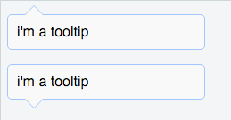

用CSS实现tooltip arrow的效果
Bootstrap 组件库中有个弹出框组件： bootstrap popover。它的样子类似于这样：

其中指向的三角形是用纯CSS实现的。这里把这个三角形的CSS代码剥离出来讲解。
先讲下实现的原理。我们需要两个纯色的三角形，一个是边框的颜色，另一个是内容主题的背景色，第二个比第一个稍微小1px。然后把第二个三角形覆盖到第一个三角形上，就只能看到1px的边框，也就是上图里的三角形。
tooltip的HTML代码如下（三角形指向朝下）：
<div class="tooltip bottom">
<p>i'm a tooltip</p>
<div class="arrow"></div>
</div>
先给出tooltip的式样：
// tooltip的样式
.tooltip {
position:relative;
}
.tooltip p {
padding:10px;
background-color:#f9f9f9;
border:solid 1px #a0c7ff;
border-radius:5px;
width: 200px;
}
注意tooltip的 position: relative。 因为arrow相对于父节点偏移的，用绝对布局+父节点relative可以很方便的指定arrow相对于父节点的偏移位置。
接下来要用到:after伪元素，因为需要两个三角形。div一个，:after伪元素一个。先指定这两个三角形共通的css样式：
// arrow的默认式样，绝对布局，边框透明。
.arrow, .arrow:after {
position: absolute;
display: block;
width: 0;
height: 0;
border-color: transparent;
border-style: solid;
}
接下来分别画出这两个三角形。这里用到一个小技巧：border-top-color: #a0c7ff;border-width:10px;在元素size为0的情况下会形成一个宽20px，高10px，颜色为#a0c7ff 的三角形。然后需要做的就是调整两个三角形的位置。
注意这里css selector的权重比上面的高，可以覆盖border-color的css样式。
// outer arrow。
.tooltip.bottom > .arrow {
bottom:-20px;
left:20px;
border-top-color: #a0c7ff;
border-width:10px;
}
// inner arrow
.tooltip.bottom > .arrow:after {
content: ' ';
bottom:-9px;
left:-10px;
border-top-color:#f9f9f9;
border-width:10px;
}
示例：JSFiddle